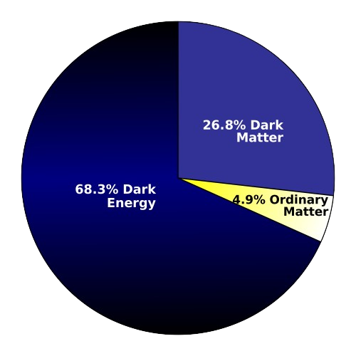

Dark Sector
Is Dark Matter part of a Dark Sector? The possibility of a dark sector neutral under Standard Model (SM) forces furnishes an attractive explanation for the existence of Dark Matter (DM), and is a compelling new-physics direction to explore in its own right, with potential relevance to fundamental questions as varied as neutrino masses, the hierarchy problem, and the Universe's matter-antimatter asymmetry. Because dark sectors are generically weakly coupled to ordinary matter, and because they can naturally have MeV-to-GeV masses and respect the symmetries of the SM, they are only mildly constrained by high-energy collider data and precision atomic measurements.  Investiging the properties of dark matter and dark energy through various models are being done in our collaboration, notably introducing new exotic composite particles.